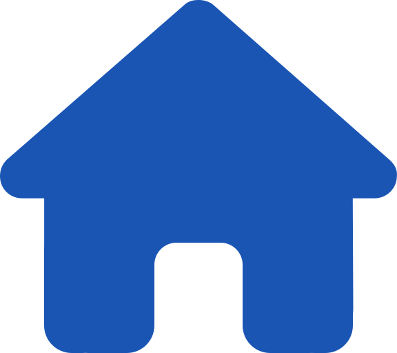
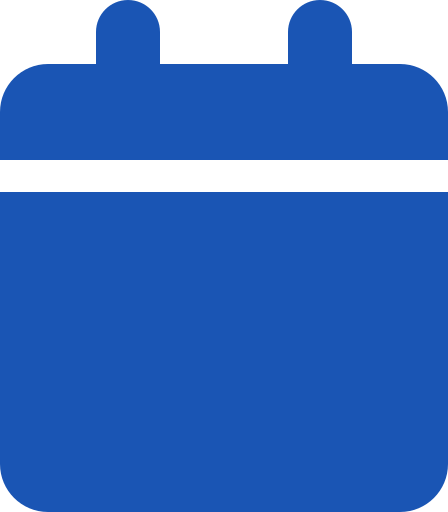

<footer>
    <button class='fab' routerLink='/create-task'>
        
    </button>

    <div class="private-footer">
        <div class='footer'>
            
            
        </div>
        <div class='bar sec-bar'></div>
    </div>
</footer>